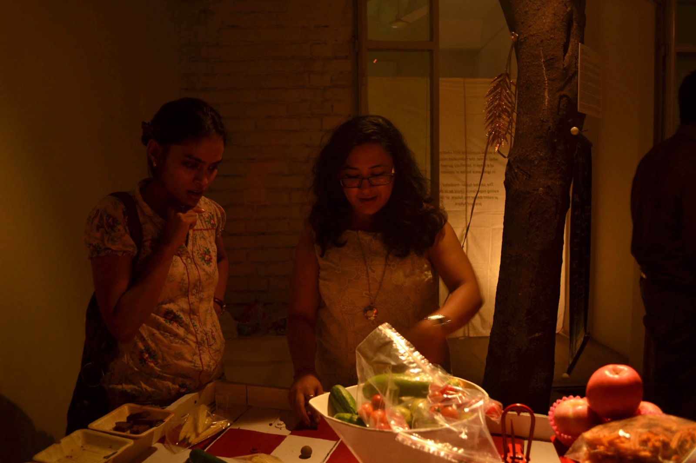
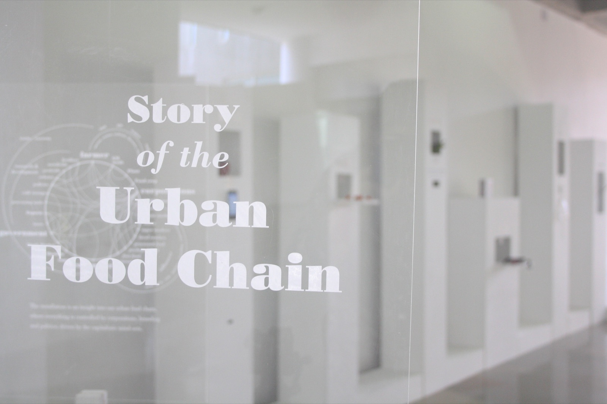
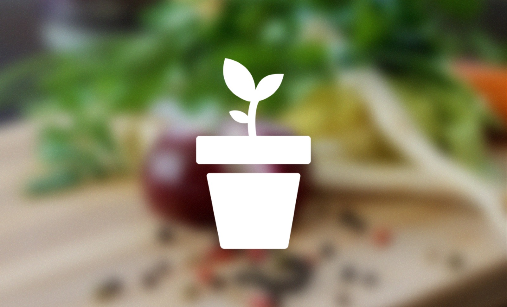

Beyond research
Making things, outside the research brief
My creative and community practice keeps me close to the people I usually study: makers, growers, cooks and anyone sharing their work with an audience.
Poems
I write and publish poetry. Read them on Tumblr.
Community
I'm an Advisory Board Director at Greening Wingrove CIC (2023–25), and I volunteer with Ouseburn Farm and the Star & Shadow community cinema and kitchen.
Graphic design
Earlier visual and communication work is on Behance.
Earlier art, food & public engagement work

Appetite
A participatory board game about food and consumer choice, made in the Khoj residency (2014) with Suvani Suri. Presented in Milan and New York.

Story of the Urban Food Chain
A public installation that uses food items as interfaces to make people question everyday food choices. NID, 2013.

Roofitarian
A sensor-equipped smart planter and urban-farming prototype that grew out of my master's thesis on food politics.